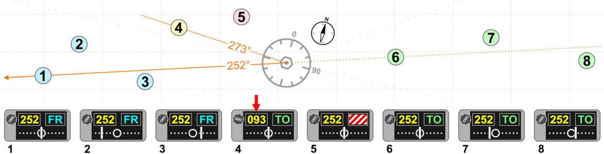

Radionavigation is the application of radio frequencies to determine a position of an object on the Earth, either the vessel or an obstruction.
The basic principles are measurements from/to electric beacons, especially:
- Angular directions, e.g. by bearing, radio phases or interferometry,
- Distances, e.g. ranging by measurement of time of flight between one transmitter and multiple receivers or vice versa,
- Distance differences by measurement of times of arrival of signals from one transmitter to multiple receivers or vice versa
- Partly also velocity, e.g. by means of radio Doppler shift.
- Combinations of these measurement principles also are important—e.g., many radars measure range and azimuth of a target.
Most airplanes Today use GPS or combination of IRS and GPS to locate themselves.
These systems allow airplanes to know their geographical position. While GPS is the most precise system, it is also the least reliable. You can't guarantee satellite connection 36000 feet above the earth.
That is why most commercial airlines rely on IRS (Inertial Reference System). While it has some 650 meters of drift for every hour of flight, it doesn't rely on any external reference, like ground stations or satellites, so the chance of critical failure is smaller than with other systems.
Inertial navigation is a self-contained navigation technique in which measurements provided by accelerometers and gyroscopes are used to track the position and orientation of an object relative to a known starting point, orientation and velocity. Inertial measurement units (IMUs) typically contain three orthogonal rate-gyroscopes and three orthogonal accelerometers, measuring angular velocity and linear acceleration respectively. By processing signals from these devices it is possible to track the position and orientation of a device.
Accordingly, inertial navigation is usually used to supplement other navigation systems, providing a higher degree of accuracy than is possible with the use of any single system. For example, if, in terrestrial use, the inertially tracked velocity is intermittently updated to zero by stopping, the position will remain precise for a much longer time, a so-called zero velocity update. In aerospace particularly, other measurement systems are used to determine INS inaccuracies, e.g. the Honeywell LaseRefV inertial navigation systems uses GPS and air data computer outputs to maintain required navigation performance. The navigation error rises with the lower sensitivity of the sensors used.
VOR transmitters
Very high frequency omni-directional range (VOR) is a type of short-range radio navigation system for aircraft, enabling aircraft with a receiving unit to determine its position and stay on course by receiving radio signals transmitted by a network of fixed ground radio beacons. It uses frequencies in the very high frequency (VHF) band from 108.00 to 117.95 MHz.
VOR signals provide considerably greater accuracy and reliability than NDBs due to a combination of factors. Most significant is that VOR provides a bearing from the station to the aircraft which does not vary with wind or orientation of the aircraft. VHF radio is less vulnerable to diffraction (course bending) around terrain features and coastlines. Phase encoding suffers less interference from thunderstorms.
If a pilot wants to approach the VOR station from due east then the aircraft will have to fly due west to reach the station. The pilot will use the OBS to rotate the compass dial until the number 27 (270°) aligns with the pointer (called the primary index) at the top of the dial. When the aircraft intercepts the 90° radial (due east of the VOR station) the needle will be centered and the To/From indicator will show "To". Notice that the pilot sets the VOR to indicate the reciprocal; the aircraft will follow the 90° radial while the VOR indicates that the course "to" the VOR station is 270°. This is called "proceeding inbound on the 090 radial." The pilot needs only to keep the needle centered to follow the course to the VOR station. If the needle drifts off-center the aircraft would be turned towards the needle until it is centered again. After the aircraft passes over the VOR station the To/From indicator will indicate "From" and the aircraft is then proceeding outbound on the 270° radial. The CDI needle may oscillate or go to full scale in the "cone of confusion" directly over the station but will recenter once the aircraft has flown a short distance beyond the station.
On the course deviation indicator the radial is selected, and together the needle and TO/FR flag show the aircraft's position.